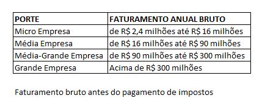
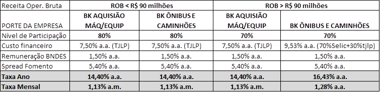

BNDES Finame
Created Friday 23 October 2015 - Atualizado em 04/jan/2016
Esta linha é a mais indicada para clientes que desejam adquirir máquinas e equipamentos.
Quando for operação de até R$ 50 mil, oferecer possibilidade de Banco do Empreendedor MPE
**Lembre-se que a Fomento só acata projetos de BNDES Finame para quem possui CNPJ**
PÚBLICO ALVO
Empresas com faturamento anual conforme abaixo:

Itens financiáveis:
- Aquisição de máquinas e equipamentos
- Aquisição de bens de informática e automação
- Ônibus, caminhões, carrocerias, cavalos-mecânicos, reboques e semi reboques tipo doly, carros-fortes, guindastes, betoneiras, compactadores de lixo e aetonaves executivas.
- Capital de giro puro desde que o solicitante seja FABRICANTE DE MÁQUINAS E EQUIPAMENTOS e que o valor seja destinado às despesas de produção das máquinas e equipamentos (Não aplica-se aos fabricantes do descrito no item 3).
- Capital de giro associado, limitado a 30% do valor do financiamento. (válido somente quando aquisição de máquinas e equipamentos e desde que empresa fature até R$ 90 milhões/ano)
** REQUISITO É QUE BEM TENHA CÓDIGO FINAME **
Código Finame: o fornecedor deve ter o produto a ser financiado cadastrado no BNDES.
cliente pode pesquisar neste link http://www.bndes.gov.br/SiteBNDES/bndes/bndes_pt/Ferramentas_e_Normas/Credenciamento_de_Equipamentos/consulta.html
** SÓ FINANCIA ITEM NOVO **
Limite Financiável
O limite máximo será o equivalente a 40% do total faturado pela empresa no ano fiscal anterior (Ex. se estamos no ano de 2015, será utilizado o faturamento no ano anterior, ou seja, 2014).
Este valor não pode ser superior ao Patrimônio Líquido da empresa.
O Patrimônio Líquido é o valor registrado no Contrato Social da empresa.
Limite máximo: R$ 20 milhões
Taxa de Juros
** Alertar o cliente que a taxa é pós-fixada, ou seja, TJLP e Selic são taxas que podem variar ao longo do contrato e qualquer variação, para mais ou para menos, incide sobre o contrato **

Tjlp: Base jan/16 - mar/16 : 7,50 % a.a. Selic: Base Dez/15 = 14,25% a.a.
Prazos
Prazo total de financiamento de até 60 meses
Carência:
- Aquisição de Bens de informática e automação: carência de até 12 meses
GARANTIAS
Tarifas
Será cobrata Tarifa de Abertura de Cadastro de 1,5% sobre o valor financiado sendo 50% após o Enquadramento (não reembolsável) e os demais 50% no ato da liberação do financiamento (caso a propostas seja aprovada).
Valor máximo da tarifa é de R$ 50 mil
Solicitação do financiamento
A solicitação é via site da Fomento Paraná segundo passo-a-passo descrito aqui
Backlinks: 5. Linhas de Financiamento:Banco do Empreendedor - MPE 2. Identificando a necessidade do cliente:PJ - Micro e Pequenas Empresas 2. Identificando a necessidade do cliente:PJ - Medias e Grandes Empresas:Medias Empresas 2. Identificando a necessidade do cliente:PJ - Medias e Grandes Empresas:Grandes Empresas 3. Como solicitar financiamento pelo site:1. Iniciado - Fase do Cliente 5. Linhas de Financiamento:Credito Jovem 1. Wiki Fomento - Atendimento ao Cliente 5. Linhas de Financiamento